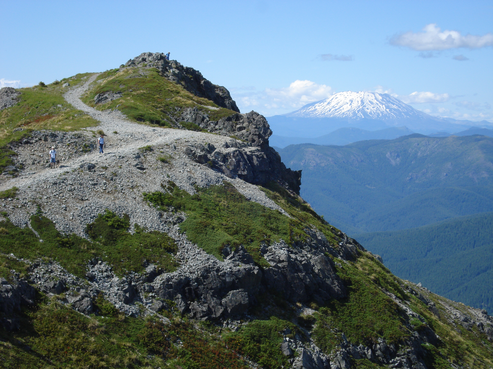

Silver Star Mountain
Silver Star Mountain is an extinct volcano in the southwestern Cascade Mountains in the U.S. state of Washington, named for the pattern of five prominent ridges that radiate from the summit in the shape of a star.
Plan Your Trip
Trail Aspects:
- Exertion: Moderate, 8 Miles Round-Trip
- Sights: Views of Mt. Adams, Cascade wilderness
- Popularity: Low
- Open: April - October
Fees:
- $5 NW Pass (available at the trailhead)
Directions From Portland:
- Travel Time: Approximately 65 minutes (40 miles from downtown)
- Take I-205 N onto Highway 14 E
- In Washougal, find Washougal River Rd at milepost 16
- Go north to milepost 6.5, turn left onto Hughes Rd. (just before Vernon Bridge)
- Take a left onto Skamania Mines Rd. Pavement ends, continue on the gravel road for another 1.4 miles to the junction
- Stay left on FS 1200 and then left again in 200 yards
- In 5.8 miles, park at the obvious ridgetop parking lot
